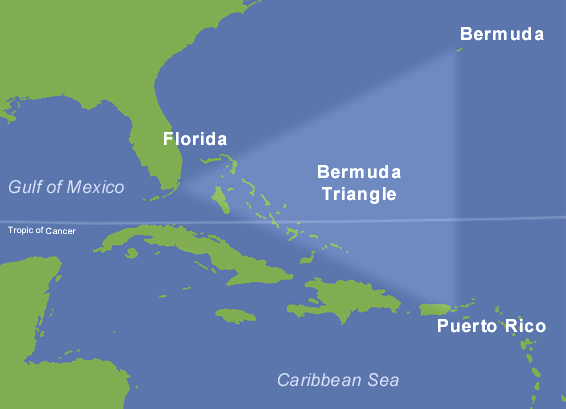

Martin's Favorite Locations  Bermuda Triangle Visit Britannica.com For decades, the Atlantic Ocean’s fabled Bermuda Triangle has captured the human imagination with unexplained disappearances of ships, planes, and people. Also contains some great species of fish. If you dare visit!!